Asset Tracking with Magistrala


Asset Tracking with Magistrala
Businesses need real-time visibility into their valuable assets through IoT asset tracking. Delivery trucks navigate city routes, construction equipment shifts between job sites, shipping containers cross oceans, medical devices circulate through hospitals. Without GPS tracking and real-time monitoring, businesses face theft, inefficiency, billing disputes, and customer service failures.
Traditional asset management relies on manual check-ins, phone calls, and guesswork. Modern fleet management and equipment tracking demand automated IoT monitoring that shows exactly where assets are, how they're being used, and when they need attention.
Magistrala connects IoT devices to provide instant visibility into any trackable asset. Rules Engine automates actions based on location, usage patterns, or equipment status. All telemetry stores securely for compliance and analytics—whether you're managing logistics fleets, rental equipment, or industrial machinery.
Table of Contents
- Solution Structure: Tracking Things
- Tracking Demo: Fleet Tracking in Action
- Use Cases in Action
- Other Applications in Tracking Assets
- Why Magistrala
- Why Choose Magistrala Over Other Platforms
- Start Tracking Today
- Why Magistrala
- Why Choose Magistrala Over Other Platforms
- Start Tracking Today
Solution Structure: Tracking Things
Building an asset tracking solution with Magistrala treats all valuable items—vehicles, equipment, containers—as trackable assets with location, status, and performance data.
How It Works
- Assets equipped with trackers: GPS trackers, sensors, or OBD-II devices fitted to each asset
- Trackers connect as Clients: Each device registers in Magistrala with unique credentials
- Clients publish to Channels: Devices send data to specific Topics (location, telemetry, alarms) using MQTT, HTTP, or CoAP
- Rules Engine processes data: Automated logic monitors topics and triggers actions (alerts, calculations, automations)
- Users gain insights: Real-time dashboards, mobile apps, and API integrations deliver actionable intelligence
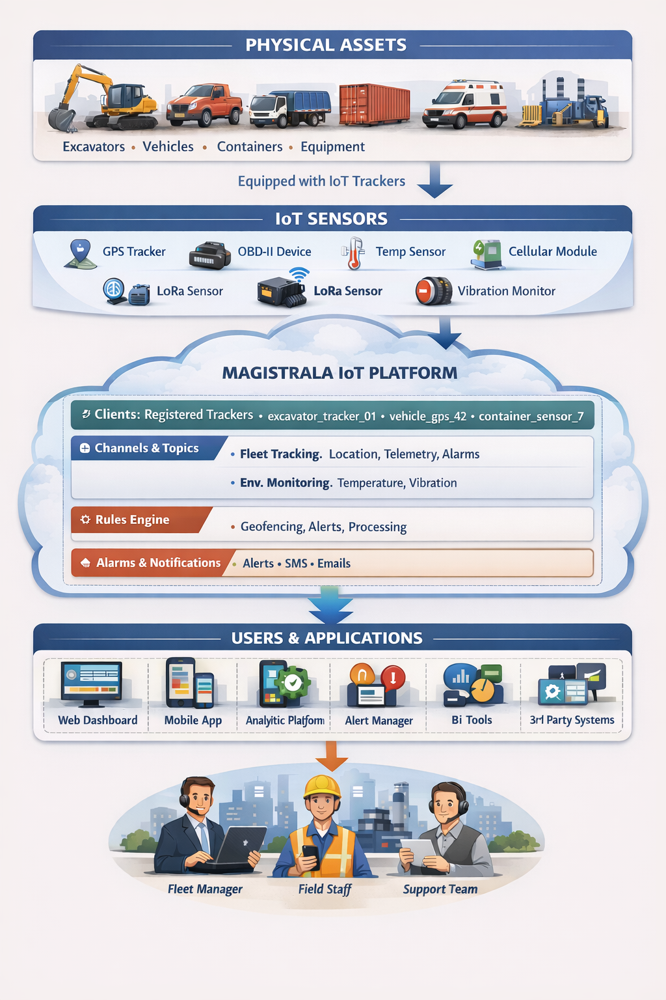
Key Capabilities
Multi-Protocol Connectivity: Connect devices via MQTT, HTTP, CoAP, WebSocket, LoRa, or OPC-UA. Magistrala handles cellular, Wi-Fi, LoRaWAN, and industrial protocols seamlessly.
Intelligent Rules Engine: Automate threshold monitoring, usage-based billing calculations, and predictive maintenance—no code changes required.
Real-Time Alarms: Configure instant alerts for theft, tampering, environmental thresholds, idle time, or maintenance needs. Deliver notifications via email and Slack.
Enterprise Security: Mutual TLS authentication, fine-grained access control (ABAC/RBAC), and complete audit logs protect your assets and data.
Tracking Demo: Fleet Tracking in Action
Let's walk through a practical example of tracking two delivery vans in real-time. This guide demonstrates how to set up the entire solution from creating digital assets to visualizing live telemetry data.
Step 1: Create Fleet Channel
First, create a Channel to represent your fleet. Channels group related devices and their data streams together.
In the Magistrala platform, navigate to Channels and create a new channel called fleet_channel. This will serve as the communication hub for all your vehicles.
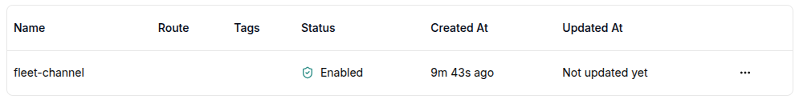
Step 2: Create Vehicle Clients
Next, create Clients (digital twins) for each vehicle. Each Client has unique credentials that authenticate the physical device.
Create two clients:
- van_001 - First delivery van
- van_002 - Second delivery van
Each client is assigned a unique ID and secret (password) that the physical IoT tracker will use to authenticate.
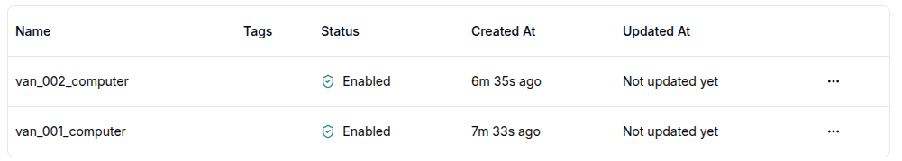
Step 3: Connect Clients to Channel
Connect both van clients to the fleet channel. This authorization allows the vehicles to publish telemetry data to the channel.
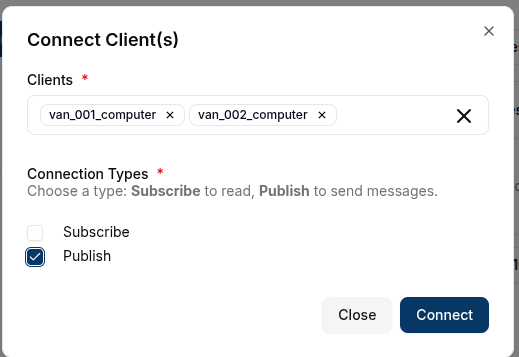
Step 4: Configure IoT Simulator
Now configure the IoT device emulator to simulate real GPS trackers sending data from both vans. Each simulator instance represents a physical tracking device installed in a vehicle.
Configuration settings:
- Broker URL:
messaging.magistrala.absmach.eu - Username: Client ID from Magistrala
- Password: Client secret from Magistrala
- Message Format: SenML (Sensor Measurement Lists)
- Topic Pattern:
m/{{domain}}/c/{{channelid}} - Data Points: GPS coordinates, speed, temperature, humidity, fuel consumption
Configure two simulator instances—one for each van.
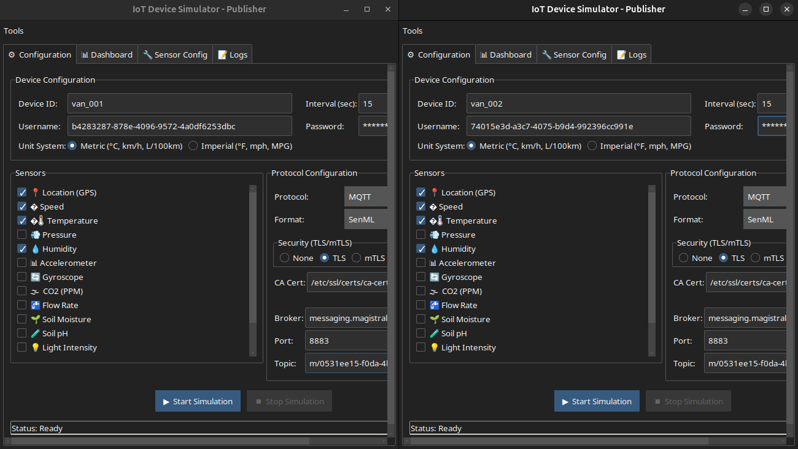
Step 5: Set Up Rules Engine
Create two rules to process incoming vehicle telemetry:
Rule 1: Save Telemetry Data
This rule processes SenML-formatted messages and stores them in the database for historical analysis and reporting.
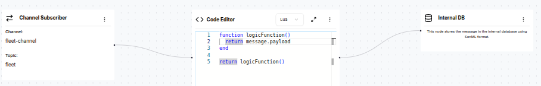
Rule 2: Generate Alarms
This rule monitors vehicle data and creates alarms when thresholds are exceeded (e.g., high temperature, low fuel, excessive speed).
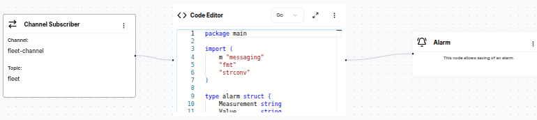
Both rules are now active and ready to process data:
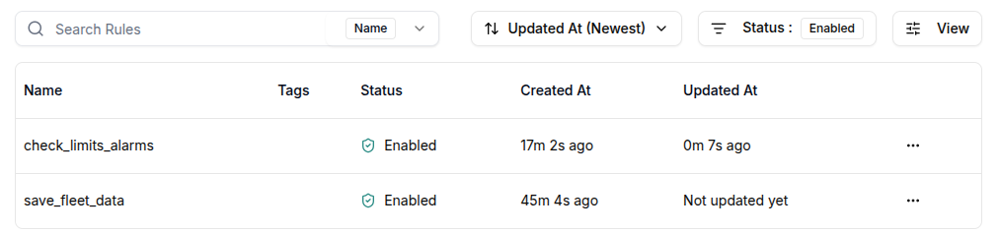
Step 6: Start Simulation
Start both IoT simulator instances. The vans immediately begin transmitting telemetry data:
- GPS coordinates updating in real-time
- Speed measurements
- Temperature and humidity readings
- Fuel consumption metrics
Messages flow from the simulators through MQTT to Magistrala, where the Rules Engine processes and stores them.
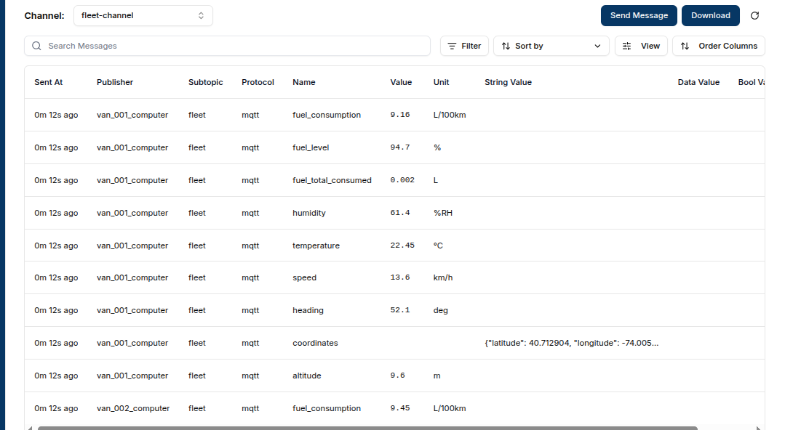
Your fleet tracking system is now operational! The platform is receiving, processing, and storing real-time data from both vehicles.
Step 7: Build Real-Time Dashboards
With data flowing into the platform, create interactive dashboards to visualize fleet operations in real-time. Magistrala provides multiple widget types for comprehensive monitoring.
Available Dashboard Widgets:
Choose from various widget types to build your custom dashboard:
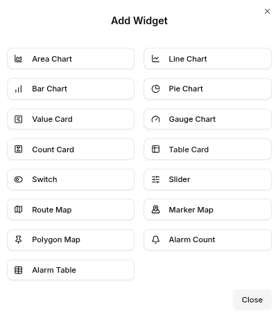
Create Route Map Widget:
Start by adding a map widget to visualize vehicle locations and routes in real-time:
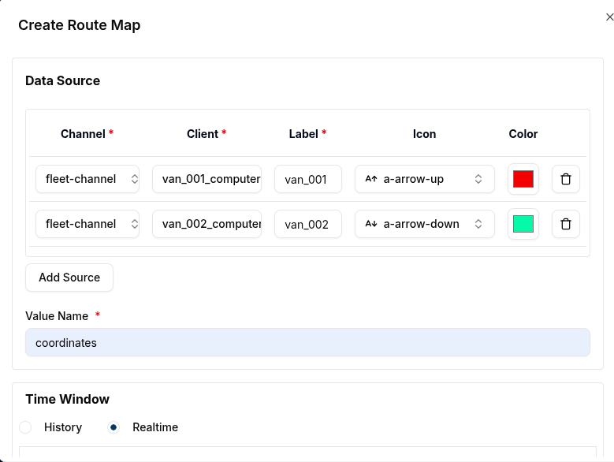
Add Alarm Table:
Create an alarm table widget to display critical alerts when thresholds are exceeded—fuel consumption limits, speed violations, temperature extremes, and other important events:
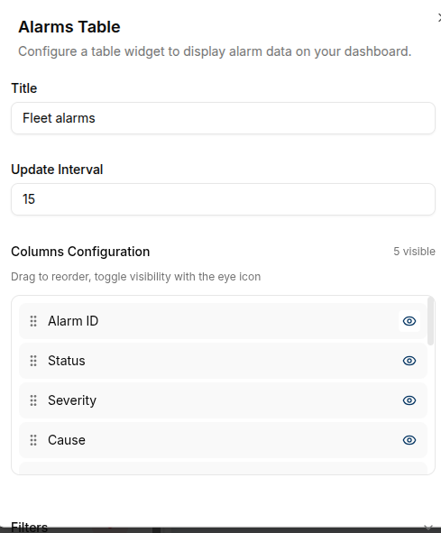
Complete Dashboard View:
Your operational dashboard now displays:
- Route Map: Real-time vehicle locations with movement trails
- Alarm Table: Active alerts for fuel consumption, speed limits, temperature thresholds
- Take immediate action based on alerts—dispatch maintenance, contact drivers, reroute vehicles
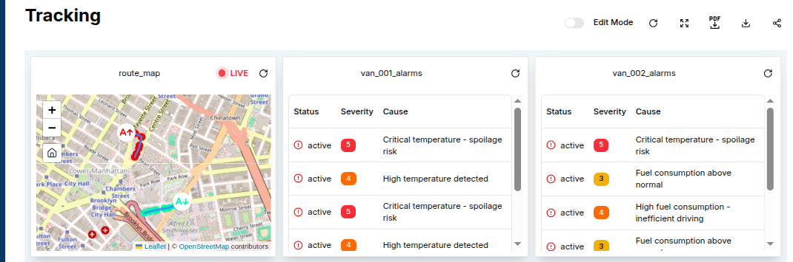
Add Performance Metrics:
Enrich your dashboard with additional widgets:
- Line Graphs: Track humidity and speed trends over time
- Value Cards: Monitor current fuel consumption levels
- Gauges: Display speed with visual indicators for safe/warning/danger zones
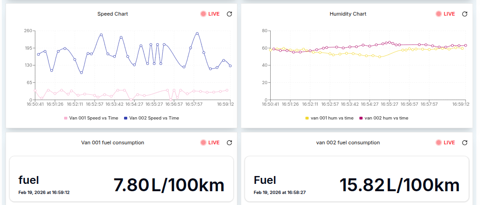
Temperature Monitoring:
Add gauge widgets to monitor critical environmental conditions:
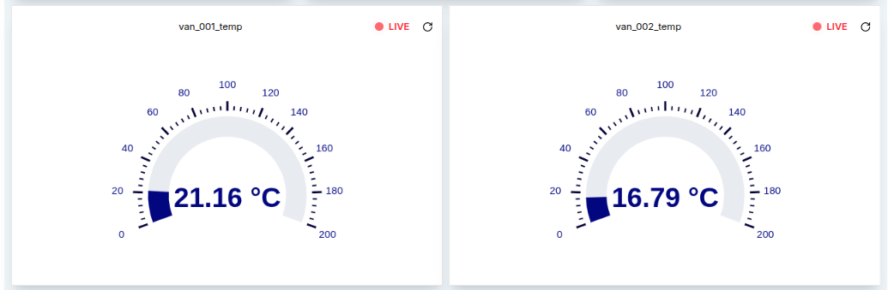
With these dashboards, you have complete visibility into your fleet operations, enabling data-driven decisions and rapid response to issues.
Step 8: Generate Reports
Transform raw telemetry data into actionable business reports. Use the reporting engine to analyze fleet performance, optimize operations, and support billing.
Create Custom Reports:
Build reports for specific business needs—fuel consumption analysis, route efficiency, maintenance schedules, or usage-based billing:
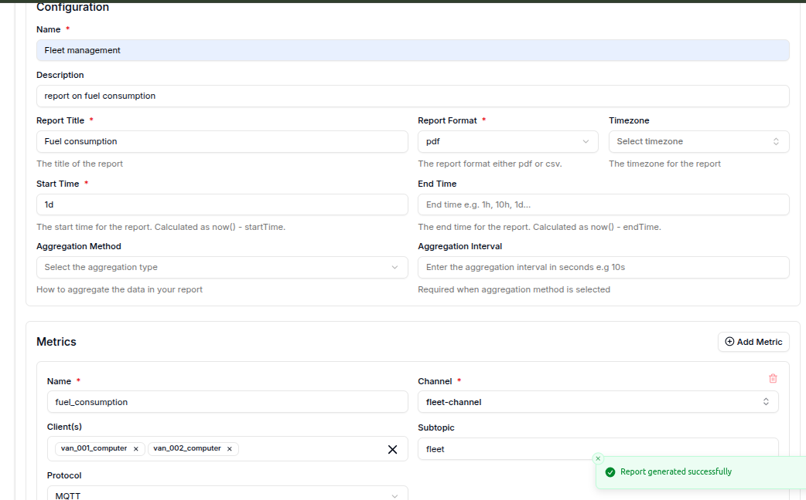
Sample Generated Reports:
Automated reports provide insights across your fleet:
- Fuel consumption by vehicle and time period
- Speed compliance and safety metrics
- Temperature exposure for sensitive cargo
- Route efficiency and delivery performance
- Usage-based billing calculations
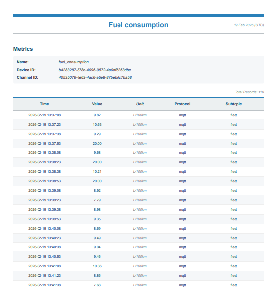
Reports can be scheduled for automatic generation and delivered via email, supporting operational reviews, customer billing, and compliance documentation.
Your complete fleet tracking solution is now operational—from device connectivity through data visualization to business reporting.
Use Cases in Action
Logistics & Shipment Tracking
Logistics companies managing hundreds of delivery vehicles and shipments need real-time visibility across their entire fleet. Magistrala with IoT trackers enables:
- Real-time location tracking of all vehicles and shipments across routes
- Automated delivery verification with timestamp and location confirmation
- Route optimization based on traffic patterns and delivery windows
- Proof of delivery with location-stamped delivery confirmations
- Customer notifications with accurate ETAs based on real-time vehicle position
Fleet Management
Fleet operators need to monitor vehicle health, driver behavior, and operational efficiency across diverse vehicle types. Magistrala enables:
- Real-time vehicle telemetry monitoring engine diagnostics, fuel consumption, and battery health
- Driver behavior analytics tracking harsh braking, rapid acceleration, and idle time
- Predictive maintenance scheduling based on engine hours, mileage, and diagnostic codes
- Usage-based insights for cost allocation, billing, and resource optimization
- Compliance monitoring ensuring vehicles stay within authorized zones and operating hours
- Fuel efficiency tracking identifying wasteful patterns and optimization opportunities
Other Applications in Tracking Assets
Beyond delivery fleets and logistics, Magistrala's asset tracking capabilities extend across diverse industries:
- Construction & Heavy Equipment: Track excavators, bulldozers, and cranes across job sites with theft prevention and automated usage-based billing
- Vehicle Leasing: Monitor mileage, vehicle condition, and driver behavior for usage-based leasing models
- Healthcare: Track medical equipment across departments and facilities with compliance audit trails
- Car Sharing & Mobility: Enable reservations, dynamic pricing, and EV charging management
- Rental Services: Monitor tools and equipment with usage-based billing and theft prevention
- Industrial Manufacturing: Locate specialized equipment and schedule maintenance based on actual usage
- Insurance Telematics: Power usage-based insurance with real driving data and behavior analytics
- Public Transportation: Provide real-time vehicle tracking and arrival predictions for passengers
Why Magistrala
- Open Source Freedom: Apache 2.0 license with no vendor lock-in. Active community and extensible architecture.
- Enterprise-Grade Security: Mutual TLS authentication, fine-grained access control, complete audit logs.
- Scalable Architecture: Handle millions of devices and messages. Deploy on cloud or edge infrastructure.
- Multi-Tenancy: Single instance serves multiple organizations with isolated domains and shared infrastructure.
- Data Persistence: Store telemetry in Timescale, PostgreSQL, or integrate with analytics frameworks.
Why Choose Magistrala Over Other Platforms
- True Open Source, No Vendor Lock-In: Unlike proprietary IoT platforms, Magistrala uses the Apache 2.0 license.
- Cloud-Native & Self-Hostable: Run on Magistrala Cloud for zero infrastructure management, or self-host on your own servers for complete control.
- Built for Developers: Clean REST APIs, comprehensive documentation, and standard protocols (MQTT, HTTP, CoAP, WS) mean faster integration.
- Production-Ready Out of the Box: Enterprise authentication (mutual TLS), fine-grained access control, audit logs, and multi-tenancy are included—not expensive add-ons.
- Active Community & Professional Support: Open development on GitHub means transparency and community contributions. Need help? Direct access to the engineering team at info@absmach.eu.
Start Tracking Today
Ready to transform your asset tracking operations? Our team will help you design and implement a solution tailored to your specific needs.
Contact us today for a demo or start building with a free trial – no credit card required.